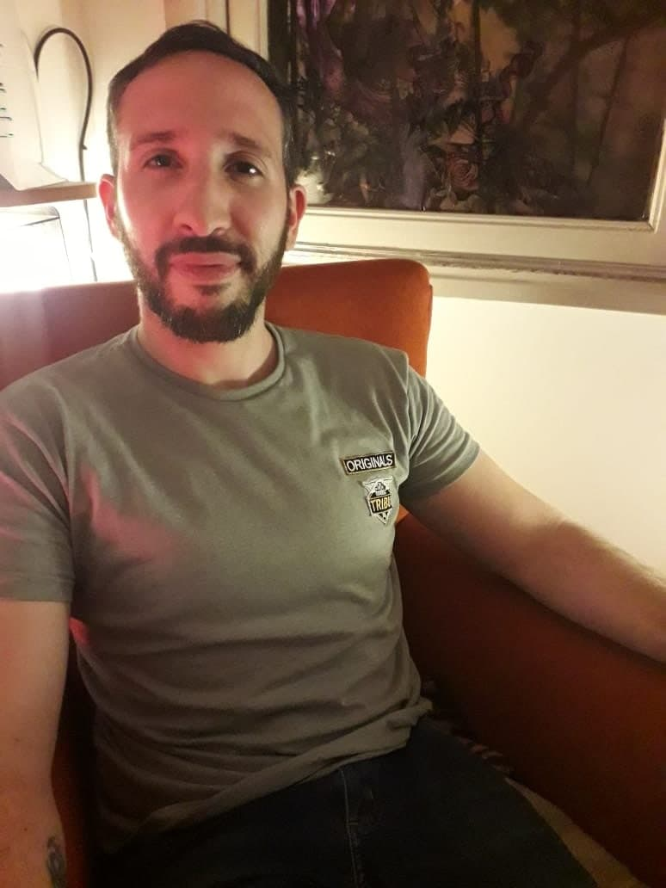
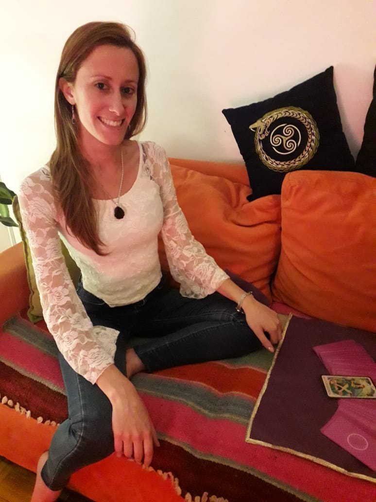

CREADORES DE UNA AVENTURA
"Había 4 sanadores, brujos o almas que se interesan por lo espiritual, cómo quieran llamarlo. De lugares, escuelas y pensamientos diferentes, pero con un mismo objetivo: sanarse al sanar a otros. Tal fue la fuerza que pusieron en ese deseo, en esa meta; que uno de ellos, un astrólogo de los antiguos, reencarnado en este tiempo, decidió juntar los cuatro caminos y formar un grupo, una logia, o más bien una "tribu" y se dieron cuenta que Kirón los representaba de alguna manera a todos. Así crearon esta aventura a la que denominaron "Monte Kirón". Te contamos un poco sobre nosotros. ¡Vibrá alto!
Lic.Diego Simonelli
"Una vez recibido de psicólogo en el 2012 comencé a estudiar astrología Occidental. Desde allí cambió mi vida para siempre, pude acercarme a Dios gracias a la astrología. Luego me interese en estudiar la relación psicología, astrología y Dios. ¿Qué es Dios y qué tiene que ver conmigo? Esa pregunta me acompañó a estudiar Tarot, y Sanación Pránica de Master Choa Kok Sui. A partir del año 2018, la vida me mostró el camino de los Vedas y de la Astrología Védica, astrología que practico en la actualidad".
Alejandra López
”Soy profesora de Matemática. Hace un tiempo transito este camino holístico y me pareció interesante comenzar a compartir el conocimiento con personas que no sean de mi entorno. Sostengo que primero hay que practicar en nosotros y "vivir" lo que aprendemos; y luego con los demás. Mi primer acercamiento a este mundo esotérico fue Reiki y luego Astrología. Fue tal lo que me fascinó que luego empecé a estudiar Tarot. Aprendí a leer las gemas y descubrí que podía leerlas de una manera similar al tarot y eso es maravilloso“
Lic. Manuel Sotelo
.png)